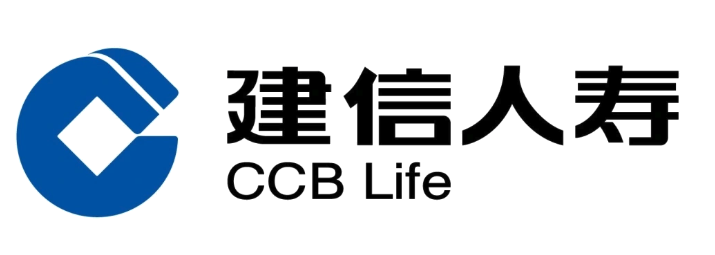

建信人寿 x 稿定设计 年度使用汇报
围绕平台使用价值、分支机构使用表现、资产沉淀和下一阶段运营建议进行复盘。
本次复盘按“年度价值-使用结构-机构表现-运营落地”推进
年度价值
呈现活跃用户、导出、资产新增、在线天数等关键指标。
使用结构
拆解模板、素材、图片模板、PPT/H5 与作品来源结构。
机构与用户表现
识别高产出分支机构和标杆用户，提炼可复制经验。
运营建议
结合保险行业场景，形成资产沉淀、规范协作和培训计划。
建信人寿已形成多分支机构参与的内容生产基础
核心结论
平台已覆盖多家分支机构的日常内容生产，广东、广西、福建等机构产出突出；下一阶段应围绕高产出机构沉淀模板和案例，推动更多机构复用。
用户覆盖具备基础规模，后续重点是提升活跃深度和产出转化
用户转化结构
启发
活跃用户数高于当前正常账号数，说明统计期内曾有较多成员参与使用。后续可重点围绕正常账号开展复训、案例共建和分支机构推广，提升稳定产出。
模板导出是主要生产方式，图片模板和素材处理需求清晰
导出类型结构
结论
建信人寿当前使用以图片模板、素材处理和轻量 PPT/H5 产出为主，适合重点服务分支机构的活动海报、产品宣导、培训材料和内部沟通场景。
导出主要来自稿定模板，自产内容也形成了一定资产沉淀
作品来源：导出结构
作品来源：新增资产结构
结论
统计期新增导出几乎全部来自稿定模板，说明模板库对日常内容生产支撑明显。
建议
自产资产已有 1,053 个，可筛选高质量内容沉淀为机构通用模板，提升后续复用效率。
资产主要沉淀在个人空间，组织级复用还有提升空间
资产沉淀结构
诊断结论
用户已经沉淀较多设计资产，但大部分仍在个人空间，跨机构复用和统一管理价值尚未充分释放。
建议
建议优先从广东、广西、福建等高产出机构筛选优秀成品和模板，沉淀为保险场景通用资源。
广东、广西、福建分公司是当前主要产出机构
结论
TOP3 机构贡献了主要导出和资产沉淀，可作为后续内部推广的标杆样板。
建议
围绕高产出机构复盘常用场景和模板，再复制到其他分公司，提升机构间内容生产一致性。
TOP 用户已形成可复用的分支机构使用样板
结论
孙娜、黄继勋、肖怡晗等用户在导出和资产沉淀上表现突出，具备标杆共建价值。
建议
建议将 TOP 用户的高频场景沉淀为“场景-模板-素材-成品”案例，用于后续分支机构培训。
保险客户的稿定价值不止效率，更包括品牌统一、版权安全和过程可控
建信人寿已经形成分支机构使用基础，下一阶段应从个人产出走向机构模板共建、品牌统一和合规可控。
快速出图
支撑产品宣导、活动海报、培训通知、节日宣传等日常内容快速制作。
统一表达
通过企业模板和标准素材，减少分支机构视觉风格不统一的问题。
商用安全
企业级商用授权降低素材使用和对外传播中的版权风险。
沉淀复用
将高频保险场景内容沉淀为机构可复用资产，减少重复制作。
过程可控
权限、审批、团队空间和资源库有助于提升内容管理可控性。
资产交接
通过组织级资产沉淀，降低人员变动带来的素材流失和复用断点。
下一阶段重点：从分散使用走向机构共建和组织级复用
高产出机构已出现
广东、广西、福建等机构的导出和资产数据突出，可作为模板共建和经验复制的起点。
组织级资产沉淀偏少
企业资源库新增资产仅 4 个，建议将优秀个人资产逐步沉淀到组织可管理空间。
模板生产价值清晰
模板导出 1,144 次，说明客户已经依赖模板完成日常内容生产，可继续强化保险场景模板包。
流程能力可进一步启用
统计期审批数据为 0，可结合对外宣传、产品合规、品牌规范等场景逐步建立内容审核流程。
建议方向
优先建设“产品宣导、活动海报、培训课件、节日宣传、内部通知”五类保险内容模板，并配合资源库和权限管理形成长期复用机制。
下一阶段运营计划：围绕标杆机构、模板共建和资产治理推进
诊断结果
- 37 个用户中 27 个在统计期活跃。
- 新增导出 1,366 次，模板导出是主要方式。
- 个人空间新增资产占比约 97.6%。
- 审批流程和企业资源库仍有较大启用空间。
标杆机构共建
选择广东、广西、福建分公司，复盘高频物料场景并沉淀优秀案例。
模板包建设
围绕产品宣导、活动海报、培训课件、节日宣传建立保险场景模板包。
资源库治理
将高质量个人资产迁移到团队空间和企业资源库，提升跨机构复用效率。
规范与培训
面向分支机构开展模板使用、版权安全、审批流程和资产沉淀培训。
30 天
确认首批标杆机构、模板共建主题和资源库分类规则。
60-90 天
完成首批保险场景模板包上线，复盘导出、资产沉淀和分支机构使用变化。